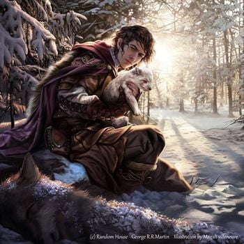

Jon Snow is the bastard son of Eddard Stark, Lord of Winterfell.[9] He has five half-siblings: Robb, Sansa, Arya, Bran, and Rickon Stark. Unaware of the identity of his mother,[10] Jon was raised at Winterfell. At the age of fourteen, Jon joins the Night's Watch, where he earns the nickname Lord Snow. Jon is one of the major POV characters in A Song of Ice and Fire.
